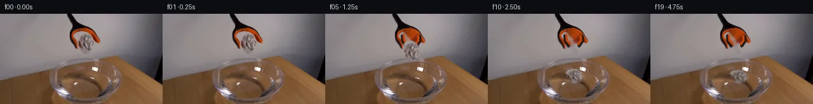

![首帧]()

Round 00
2026-11-05T05:06:52.498246+00:00像素候选变化代码 +267/−0inspection 更新
pixels 1d0134eb8f71a187 · code 2b96303b72cf2cc6
查看本轮 generate.py 真实 diff
--- previous/generate.py +++ current/generate.py @@ -0,0 +1,267 @@ +#!/usr/bin/env python3 +"""Generate a locked-camera paper-release sequence from the supplied first frame.""" + +from pathlib import Path + +import cv2 +import numpy as np +from PIL import Image, ImageDraw + +import artifact_io + + +ROOT = Path(__file__).resolve().parent +H, W = 144, 256 +ORIGINAL_CENTER = np.array([135.0, 46.0], np.float32) + + +def soft_polygon_mask(shape, points, blur=0.8): + mask = np.zeros(shape[:2], np.uint8) + cv2.fillPoly(mask, [np.asarray(points, np.int32)], 255) + if blur: + mask = cv2.GaussianBlur(mask, (0, 0), blur) + return mask + + +def make_paper_matte(src): + """A hand-measured matte refined by color to avoid the orange and black jaws.""" + polygon = [ + (125, 30), (133, 29), (141, 32), (146, 37), (145, 42), + (148, 47), (144, 53), (141, 59), (137, 57), (135, 63), + (130, 60), (127, 55), (127, 50), (123, 46), (124, 40), (121, 36), + ] + hard = np.zeros((H, W), np.uint8) + cv2.fillPoly(hard, [np.asarray(polygon, np.int32)], 255) + rgb = src.astype(np.int16) + orange = (rgb[..., 0] > 95) & (rgb[..., 0] > rgb[..., 1] * 1.28) & (rgb[..., 0] > rgb[..., 2] * 1.42) + yy = np.arange(H)[:, None] + black_jaw = (rgb.max(axis=2) < 48) & (yy < 43) + hard[(orange | black_jaw) & (hard > 0)] = 0 + # Close only pinholes in paper folds, while preserving excluded jaw/orange pixels. + closed = cv2.morphologyEx(hard, cv2.MORPH_CLOSE, np.ones((3, 3), np.uint8)) + closed[(orange | black_jaw) & (hard == 0)] = 0 + return cv2.GaussianBlur(closed, (0, 0), 0.65) + + +def clean_plate(src, matte): + """Remove the held paper locally and reconstruct the now-visible open jaw tips.""" + core = (matte > 18).astype(np.uint8) * 255 + core = cv2.dilate(core, np.ones((3, 3), np.uint8), iterations=1) + plate = cv2.inpaint(src, core, 4.0, cv2.INPAINT_TELEA) + + # Fine open pincer continuations, sampled from the visible black/orange tool palette. + layer = plate.copy() + cv2.polylines(layer, [np.array([(121, 34), (122, 43), (127, 51)], np.int32)], False, (30, 25, 22), 3, cv2.LINE_AA) + cv2.polylines(layer, [np.array([(123, 34), (124, 42), (129, 48)], np.int32)], False, (196, 67, 13), 2, cv2.LINE_AA) + cv2.polylines(layer, [np.array([(148, 35), (148, 43), (143, 51)], np.int32)], False, (33, 27, 23), 3, cv2.LINE_AA) + cv2.polylines(layer, [np.array([(146, 35), (146, 42), (142, 48)], np.int32)], False, (199, 70, 14), 2, cv2.LINE_AA) + return layer + + +def affine_place(image, alpha, center, angle, scale_x, scale_y): + theta = np.deg2rad(angle) + rotation = np.array([[np.cos(theta), -np.sin(theta)], [np.sin(theta), np.cos(theta)]], np.float32) + matrix2 = rotation @ np.diag([scale_x, scale_y]).astype(np.float32) + offset = np.asarray(center, np.float32) - matrix2 @ ORIGINAL_CENTER + matrix = np.column_stack([matrix2, offset]) + warped_im = cv2.warpAffine(image, matrix, (W, H), flags=cv2.INTER_LINEAR, borderMode=cv2.BORDER_CONSTANT) + warped_a = cv2.warpAffine(alpha, matrix, (W, H), flags=cv2.INTER_LINEAR, borderMode=cv2.BORDER_CONSTANT) + return warped_im, warped_a + + +def composite(base, layer, alpha): + a = alpha.astype(np.float32)[..., None] / 255.0 + return np.clip(base.astype(np.float32) * (1.0 - a) + layer.astype(np.float32) * a, 0, 255).astype(np.uint8) + + +def tint_under_mask(frame, mask, color, strength): + layer = np.empty_like(frame) + layer[:] = np.asarray(color, np.uint8) + alpha = np.clip(mask.astype(np.float32) * strength, 0, 255).astype(np.uint8) + return composite(frame, layer, alpha) + + +def draw_ripples(frame, t): + if t < 8: + return frame + age = t - 8 … diff truncated; 180 more lines …